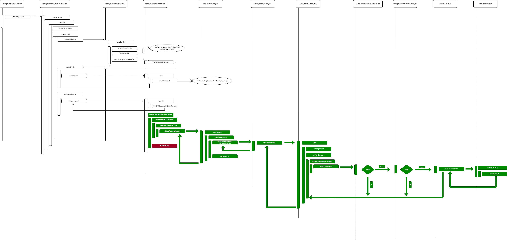

概要
本文介绍Perfertto 的工具安装,大概使用. android系统,涉及到一些卡顿问题,需要使用trace分析
网址
https://ui.perfetto.dev/
windows 环境
安装 Python 2.7.14,上网百度
安装pip,python -m pip install –upgrade pip,注意环境变量是否2.7路径下
配置国内源, pip config set global.index-url https://pypi.tuna.tsinghua.edu.cn/simple
恢复默认源, pip config unset global.index-url
安装win32, pip install pypiwin32
安装six, pip install six
windows 捉去trace
sdk路径, C:\Users\xielianxiong\AppData\Local\Android\Sdk\platform-tools\systrace
cmd窗口, 输入set,敲入回车,可以打印出所有环境变量
python systrace.py gfx rs input view sched am wm dalvik freq idle load sync workq powerdisk sm hal res binder_driver binder_lock -a com.android.systemui -t 5 -o trace_systemui_3.html
-a 包名, 看起来加入包名才可以捉取对应应用的trace
-t 5 ,捉5秒
-o 输出文件
也可以用该命令捉,python systrace.py -t 4 -a com.android.systemui -o trace_systemui_7.html
Perfetto
使用Peretto打开trace_systemui_7.html

搜索想要的关键字
例如代码Trace.beginSection(“KeyguardViewMediator.mKeyGuardGoingAwayRunnable”);
点击向右按键,指示黄色的搜索结果

快捷键
w 放大
s 缩小
d 右移
a 左移
源码
QSSI.12/frameworks/base/packages/SystemUI/src/com/android/systemui/keyguard/KeyguardViewMediator.java
添加标签 Trace.beginSection, Trace.endSection();
private final Runnable mKeyguardGoingAwayRunnable = new Runnable() {
@Override
public void run() {
Trace.beginSection("KeyguardViewMediator.mKeyGuardGoingAwayRunnable");
if (DEBUG) Log.d(TAG, "keyguardGoingAway");
mKeyguardViewControllerLazy.get().keyguardGoingAway();
int flags = 0;
if (mKeyguardViewControllerLazy.get().shouldDisableWindowAnimationsForUnlock()
|| mWakeAndUnlocking && !mWallpaperSupportsAmbientMode) {
flags |= WindowManagerPolicyConstants
.KEYGUARD_GOING_AWAY_FLAG_NO_WINDOW_ANIMATIONS;
}
if (mKeyguardViewControllerLazy.get().isGoingToNotificationShade()
|| mWakeAndUnlocking && mWallpaperSupportsAmbientMode) {
// When the wallpaper supports ambient mode, the scrim isn't fully opaque during
// wake and unlock and we should fade in the app on top of the wallpaper
flags |= WindowManagerPolicyConstants.KEYGUARD_GOING_AWAY_FLAG_TO_SHADE;
}
if (mKeyguardViewControllerLazy.get().isUnlockWithWallpaper()) {
flags |= KEYGUARD_GOING_AWAY_FLAG_WITH_WALLPAPER;
}
if (mKeyguardViewControllerLazy.get().shouldSubtleWindowAnimationsForUnlock()) {
flags |= WindowManagerPolicyConstants
.KEYGUARD_GOING_AWAY_FLAG_SUBTLE_WINDOW_ANIMATIONS;
}
mUpdateMonitor.setKeyguardGoingAway(true);
mKeyguardViewControllerLazy.get().setKeyguardGoingAwayState(true);
// Don't actually hide the Keyguard at the moment, wait for window
// manager until it tells us it's safe to do so with
// startKeyguardExitAnimation.
// Posting to mUiOffloadThread to ensure that calls to ActivityTaskManager will be in
// order.
final int keyguardFlag = flags;
mUiBgExecutor.execute(() -> {
try {
ActivityTaskManager.getService().keyguardGoingAway(keyguardFlag);
} catch (RemoteException e) {
Log.e(TAG, "Error while calling WindowManager", e);
}
});
Trace.endSection();
}
};